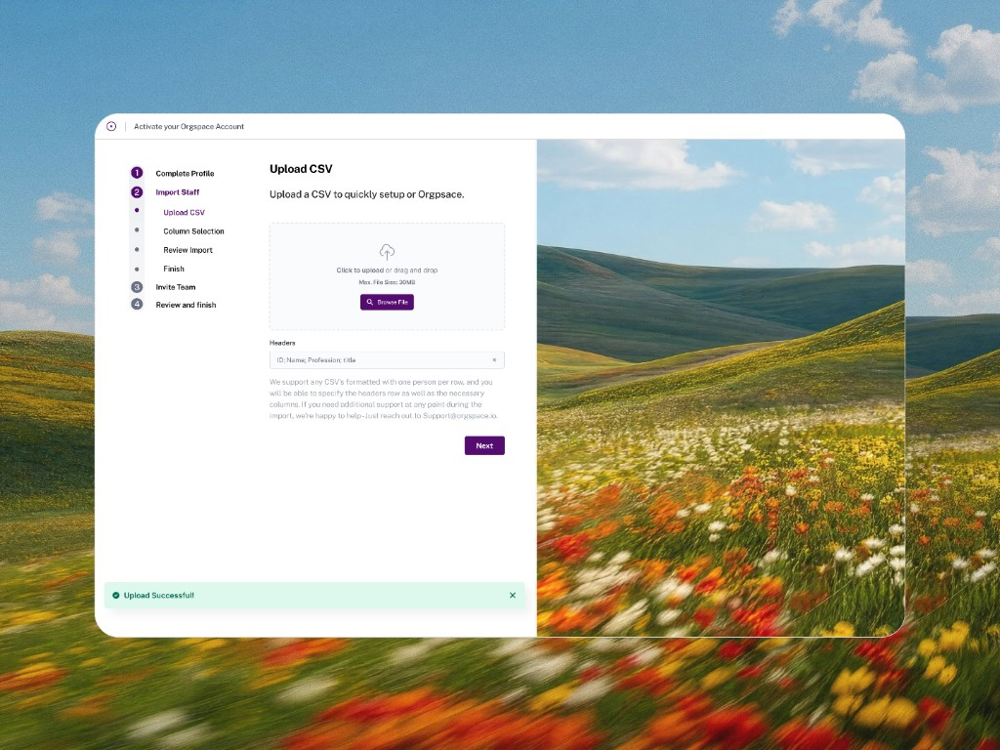
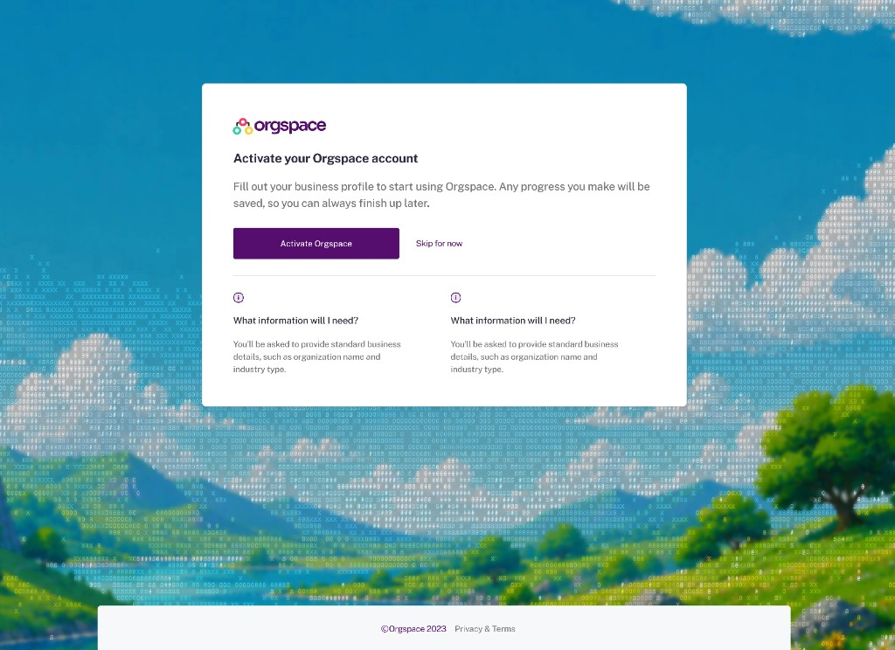
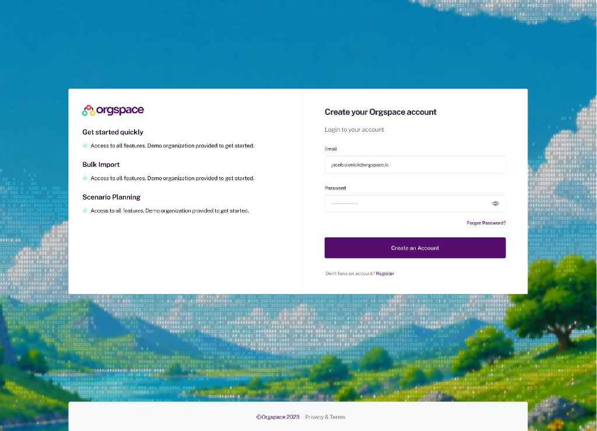
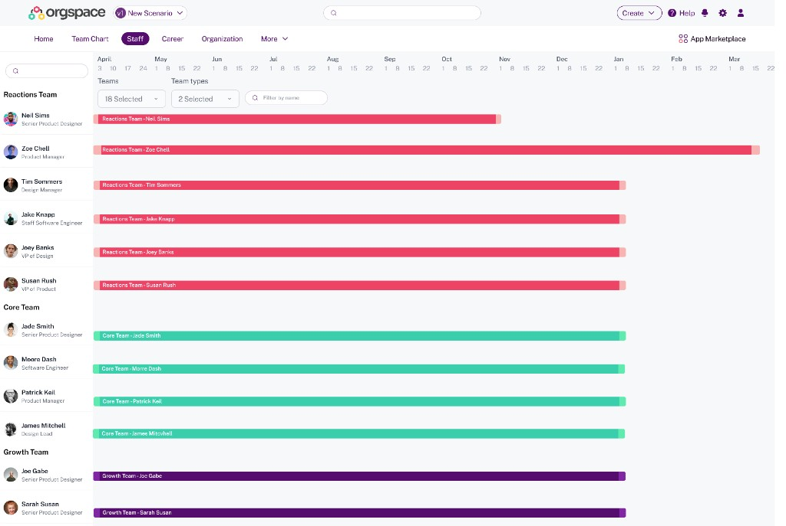
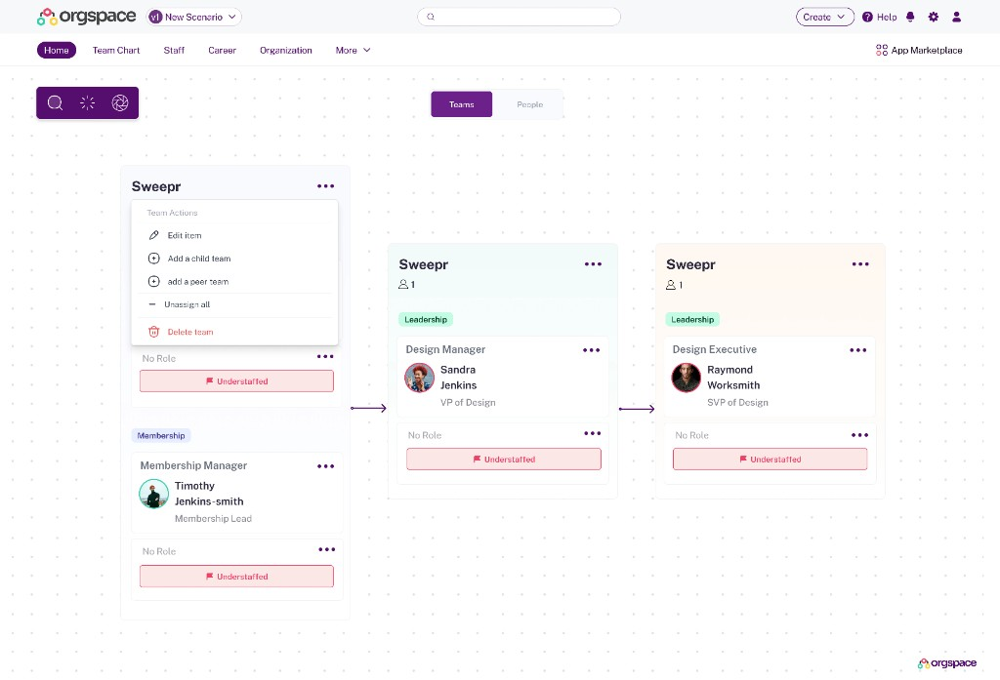
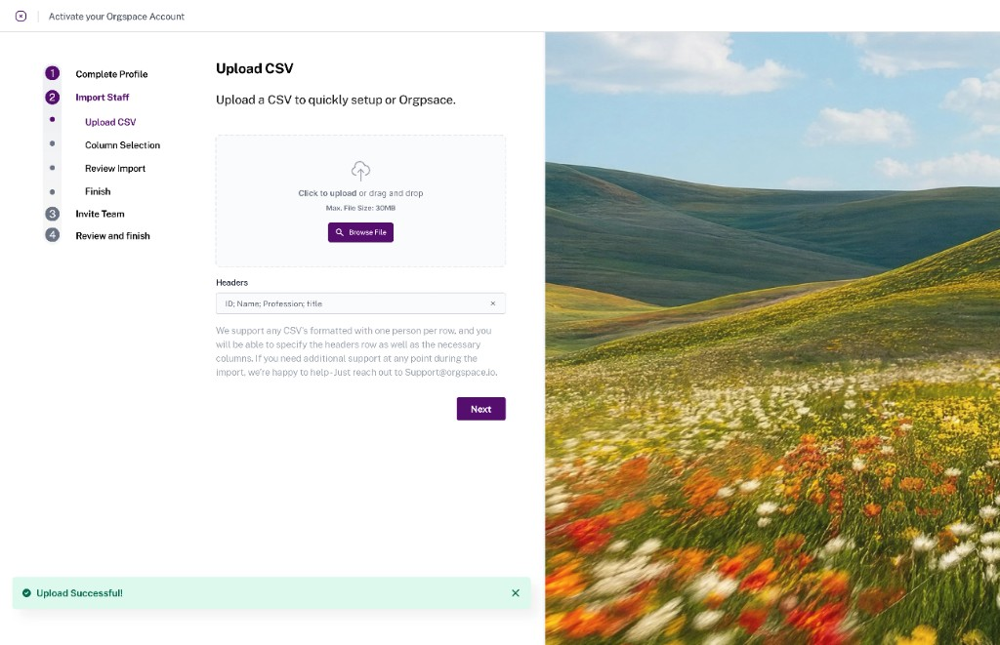
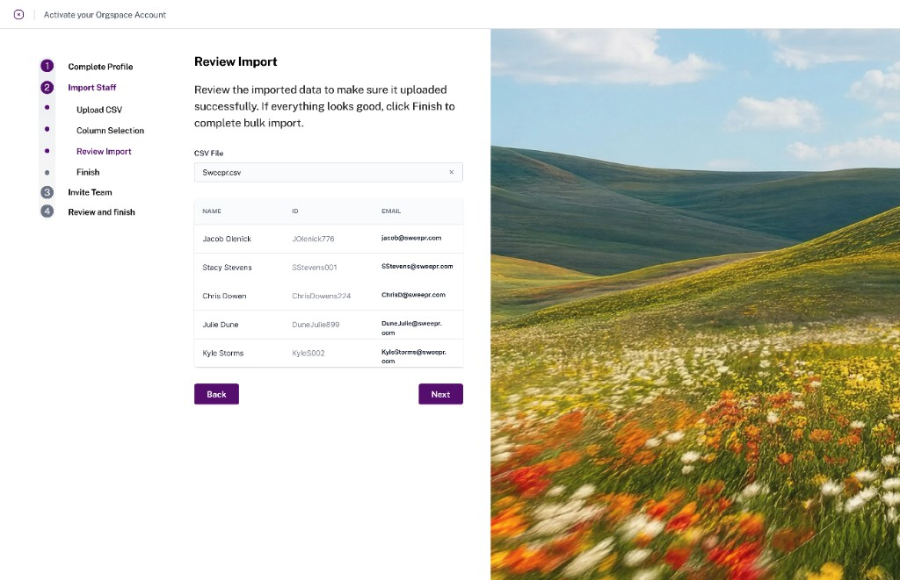
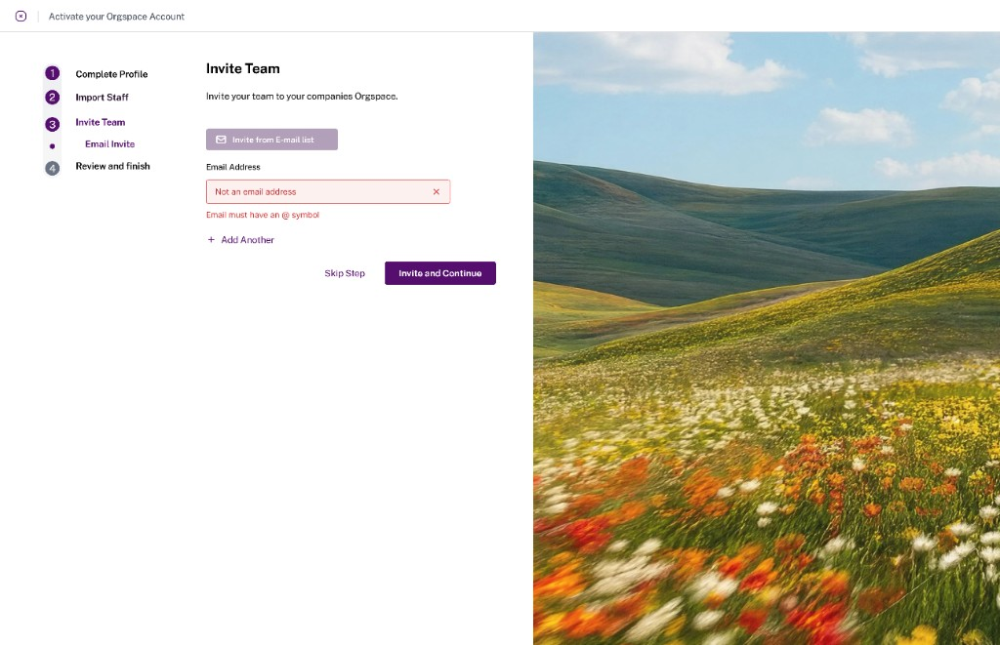
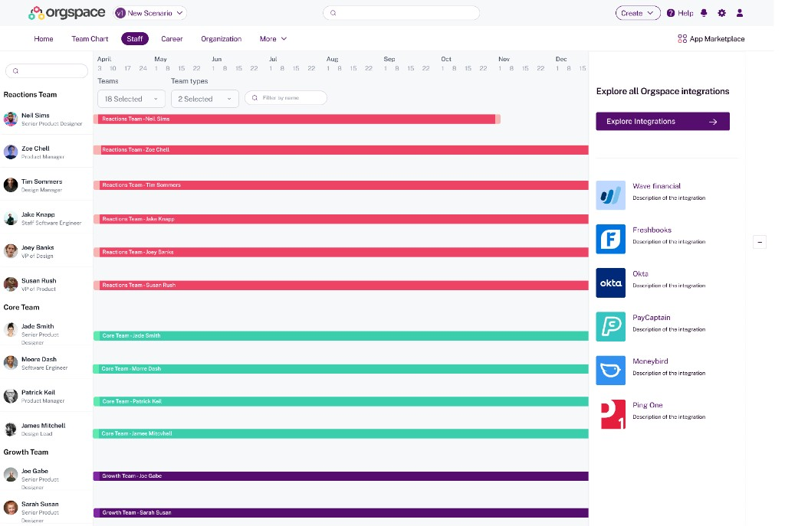

Orgspace | Modernizing an Enterprise Platform to Support Growth
Redesigning key workflows, establishing a scalable design system, and delivering a more intuitive enterprise experience for organizational planning.
Duration of the product design engagement from concept to delivery
The modernized product foundation helped support Orgspace's successful funding round

Overview
Orgspace, an enterprise platform for organizational planning and resource allocation, partnered with me to modernize its product experience ahead of its next stage of growth. Over a three-month engagement, I redesigned key workflows, established the foundation of a scalable design system, and collaborated closely with stakeholders to deliver a more intuitive and cohesive user experience.


The Challenge
The existing product had become difficult to scale. The interface lacked consistency, workflows were inefficient, and there was no centralized design system to support future product development. Orgspace needed a modern experience that would improve usability while creating a foundation for faster product iteration.

My Approach
I led the product design effort from concept to delivery using Figma. Throughout the engagement I:
- Designed a foundational design system with reusable components, styles, and design standards.
- Redesigned several core product screens to simplify complex enterprise workflows.
- Worked closely with stakeholders through regular design reviews and iterative feedback sessions.
- Maintained clear communication throughout the project to ensure alignment between business goals and product decisions.




Results
By the end of the engagement, Orgspace had a modernized product foundation that improved consistency, usability, and scalability. The new design system enabled a more efficient design process, while the redesigned core experiences positioned the product for future growth.
Most notably, the work completed during the engagement helped support Orgspace's successful $10 million funding round, giving investors and customers confidence in the company's product vision and execution.
